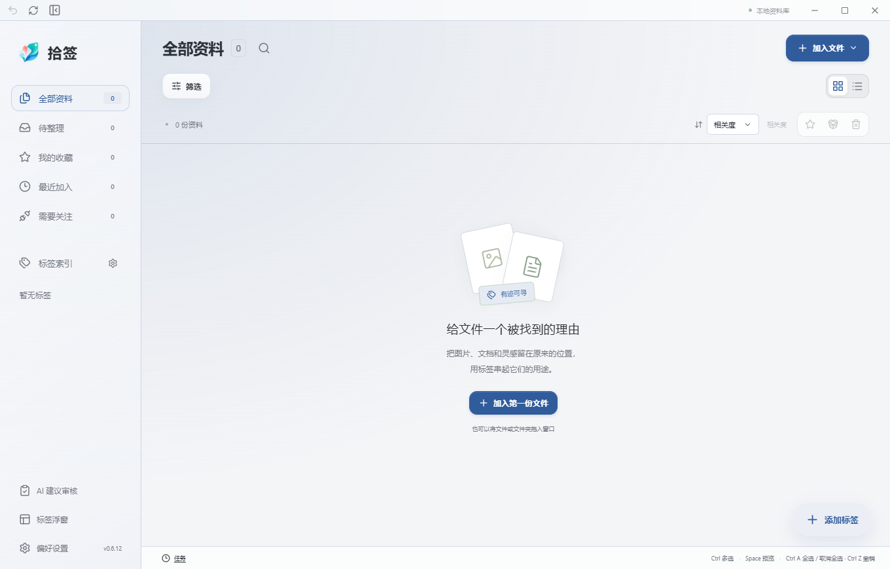

资料工作台Workspace
图片、PDF、网页资料混排在同一面墙上，先看到内容再看到文件名。
- 瀑布流与列表两种布局
- 列数、列宽、侧栏与详情宽度可调
- 收藏、备注、来源信息
整理本地文件、图片与网页，让参考资料重新派上用场。
Tag it now. Find it when it matters.

同一张效果图可以同时属于「项目参考」「建筑外墙」和「待讨论」；一份 PDF 可以与网页摘录、图片放在同一组搜索结果中。整理与找回围绕用途展开，不必为了分类反复复制文件。Keep files where they belong; connect them with tags.
图片、PDF、网页资料混排在同一面墙上，先看到内容再看到文件名。
一个文件同时属于几个用途，分类不再靠复制文件实现。
整理动作就在手边完成，不必来回切换窗口。
想不起文件名也能找到，结果说明它凭什么被找到。
浏览器里看到好的，顺手收进同一个资料库。
不用换软件，先在拾签里看清它是什么。
不需要先学会一套分类方法，也不需要把资料迁进新的仓库。
点击「加入文件」选择文件或文件夹，也可以直接拖进工作台。原件通常留在原来的路径，继续在 CAD、浏览器和 Word 里编辑它。
打开桌面标签浮窗，把标签拖到文件卡片上，或选中多份一次标注。同一份资料可以同时带着用途、部位和状态三种标签。
按 Ctrl＋F 搜标签、名称、备注或正文，结果告诉你命中在哪里。再叠加类型与日期条件，可以保存成一个集合反复使用。
界面内的小卡片为示意内容（synthetic sample material），实际结果来自你自己的资料库。
项目要换人接手时，最麻烦的不是文件本身，而是标签、备注和来源能不能一起过去。含原件的资料包让另一台电脑导入后，仍能看到原来的分组。Hand over files with their tags, notes and sources.
选中文件，导出资料包并核对范围与数量。
压缩包走你已经在用的任何一条传输渠道。
安装后导入，同名冲突会提示处理，不会静默覆盖。
检查文件夹、数量、标签与原件可读，再收尾。
装上软件，不包含你的文件或标签。 / Installs the app; does not carry your library.
恢复资料库信息；普通原文件不在其中。 / Restores library metadata, not the originals.
跨电脑交接文件、标签、备注等资料，导入时按原来的父文件夹落地。 / Transfers files and annotations between computers.
默认群青。个人标签配色独立保留，换主题不会把已经染好的标签一起改掉；界面字号也可整体调整。
中文／English · 浅色／深色 · 字号调整 · 默认主题色为群青
AI 标注与语义检索是两个独立的可选服务，不配置也能使用全部本地整理与搜索；建议需经你确认后才进入普通标签池。
安装前最容易被问到的六件事，答案都取自当前版本的真实状态。
chrome://extensions 加载已解压的扩展，然后在桌面版「偏好设置 → 浏览器采集」里连接。Edge 版走同样的步骤。桌面程序需要同时在运行。这些不是免责声明，而是当前版本的真实状态；如果你要在同事电脑上安装，请先看完这一屏。
公开下载，附 SHA256 校验文件。升级前导出标注备份，完全退出旧版后再安装。
装好后先做一件事：拖一个小文件夹进来，给其中几份贴上同一个标签，再按 Ctrl＋F 找回它们。五分钟里完成一次「贴上 → 找回」，比读说明书更快判断它适不适合你。